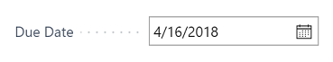
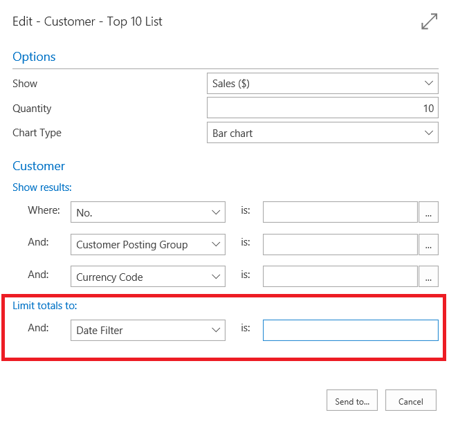

Mit Datumsangaben und Uhrzeiten in Kalendern arbeiten
Sie können Daten und Zeiten auf mehrere Arten eingeben. Dynamics 365 Business Central enthält leistungsstarke Funktionen, die die Dateneingabe beschleunigen oder Ihnen helfen, komplexe Kalenderausdrücke zu schreiben. Es gibt verschiedene Bereiche in der Anwendung, in denen Sie Daten und Uhrzeiten in die Felder eingeben können. So können Sie beispielsweise das Warenausgangsdatum für einen Auftrag festlegen. Wenn Sie Listen oder Berichtsdaten filtern, können Sie Datumswerten und Uhrzeiten eingeben, um genau die Daten zu finden, an denen Sie interessiert sind.
Tipp
Nutzen Sie kostenlose E-Learning-Inhalte über die Business Central-Benutzeroberfläche unter Microsoft Schulungen.
Überprüfen Ihrer Bereichs- und Spracheneinstellungen
Die Seite Meine Einstellungen gibt die Region und Sprache an, die Sie in der Anwendung verwenden. Diese Einstellungen beeinflussen, wie Sie Datumswerte und Uhrzeiten eingeben.
Die Einstellung Region bestimmt, wie Daten, Uhrzeiten, Ziffern und Währungen angezeigt oder formatiert werden.
Bei Datumsmustern, die Begriffe enthalten, muss die Sprache der Begriffe, die Sie verwenden, der Sprache-Einstellung entsprechen.
Hinweis
Dynamics 365 Business Central verwendet das gregorianische Kalendersystem.
Eingeben von Datumswerten
In einem Datumsfeld können Sie unter Verwendung des Standardformats ein Datum für Ihre Bereichseinstellung eingeben. Verschiedene Regionen können verschiedene Trennzeichen zwischen Tagen, Monaten und Jahren verwenden. Beispielsweise werden in einigen Regionen Bindestriche verwendet (mm-tt-jjjj) und in anderen werden Schrägstriche verwenden (mm/tt/jjjj).
Tipp
Sie können sämtliche Trennzeichen verwenden, sogar einen Leerzeichen, und das Datum wird automatisch zu den Trennzeichen geändert, die Ihrer Region entsprechen.
Hinweis
Das Format, in dem Datumswerte in gedruckten Berichten oder per E-Mail gesendeten Dokumenten angezeigt wird, wird von Ihrer persönlichen Regionseinstellung nicht beeinflusst.
Um produktiver mit Datumswerten und Uhrzeiten zu arbeiten, können Sie alle Methoden oder Formate verwenden, die in den folgenden Abschnitten beschrieben werden.
Datumsangaben aus dem Kalender auswählen
Alle Felder, die ein Kalendersymbol anzeigen, können mithilfe der Kalendertagauswahl festgelegt werden. Um die Kalendertagauswahl anzuzeigen, aktivieren Sie das Kalendersymbol oder wählen Sie die Tastenkombination Strg+Pos1 im Feld aus.

Weitere Informationen unter Tastenkombinationen in der Kalenderdatumsauswahl.
Tag-Woche-Jahr-Muster
Sie können ein Datum als Wochentag gefolgt von einer Wochennummer und optional einem Jahr eingeben. Beispielsweise bedeutet Mo25 oder mo25 Montag in der 25. Woche Wenn Sie kein Jahr eingeben, wird das Jahr des Arbeitsdatums verwendet.
Anstatt das gesamte Wort für den Wochentag einzugeben, können Sie vom Anfang an einen Teil des Begriffs eingeben. Bei Konflikten (wie bei S für Samstag oder Sonntag) werden die Tage entsprechend der Bereichseinstellung ausgewertet. Die Eingabe wird zuerst nach Arbeitsdatum und heute ausgewertet, beachten Sie dies bei der Abkürzung. Beispielsweise bedeutet t „heute“, daher kann es nicht „Dienstag“ oder „Donnerstag“ bedeuten.
Das Kalenderwocheschema folgt immer ISO 8601. Dabei ist Woche 1, in die der 4. Januar fällt, oder die Woche mit dem ersten Donnerstag des Jahres.
Ziffernmuster
In einem Datumsfeld können zwei-, vier-, sechs- oder achtstellige Werte eingegeben werden:
Wenn Sie nur zwei Ziffern eingeben, wird dies als Tagesangabe interpretiert, es gilt also der Monat und das Jahr des Arbeitsdatums.
Wenn Sie vier Ziffern eingeben, wird dies als Tages- und Monatsangabe interpretiert, es gilt also das Jahr des Arbeitsdatums. Die Reihenfolge von Tag und Monat wird durch Ihre Regionseinstellungen bestimmt. Selbst wenn Ihre Regionseinstellungen das Jahr vor den Tag und Monat stellen, werden vier Ziffern als Tag und Monat interpretiert.
Wenn Sie ein Datum zwischen dem 01.01.1950 und dem 31.12.2049 eingeben wollen, können Sie das Jahr zweistellig eingeben; ansonsten muss das Jahr vierstellig angegeben werden.
Hinweis
Wenn Sie Business Central lokal verwenden, kann der zweistellige Jahresbereich abweichen. Administratoren können den Bereich ändern, indem sie die CalendarTwoDigitYearMax-Einstellung des Business Central-Servers ändern. Weitere Informationen finden Sie unter Konfigurieren von Business Central Server.
Heute
Geben Sie das Wort für Heute in der Sprache ein, die auf der Seite Meine Einstellungen angegeben ist, um das Datum eines Datensatzes auf das heutige Datum festzulegen. Anstatt das ganze Wort einzugeben, können Sie auch einen Teil des Wortes eingeben, beginnend mit dem Anfang. Im Englischen können Sie z.B. t oder tod eingeben, solange es nicht gleichzeitig der Anfang eines anderen Wortes ist.
Periode
Wenn Sie eine bestimmte Buchhaltungsperiode filtern möchten, geben Sie in einem Datumsfeld den Buchstaben P oder das Wort Periode ein, gefolgt von einer Nummer, die die Buchhaltungsperiode identifiziert, z. B. P2 oder Periode 4. Die Buchhaltungsperiode ist relativ zum Geschäftsjahr des aktuellen Arbeitsdatums, das von Ihrem Rollencenter festgelegt wurde. Wenn das Arbeitsdatum beispielsweise 21.03.2022 lautet, filtert p1 oder einfach p die erste Buchhaltungsperiode des Geschäftsjahres 2022 (wie 01.01.2022..31.01.2022). p15 filtert den Fünfzehnten der Buchhaltungsperiode ab dem Anfang des Geschäftsjahres 2022 (wie 01.03.2023..31.03.2023).
Die Buchhaltungsperioden werden auf der Seite Buchhaltungsperiode definiert. Um die Buchhaltungsperioden anzuzeigen oder zu ändern, öffnen Sie hier die Seite.
Arbeitsdatum
Verwenden Sie ein Arbeitsdatum, um ein Datum anzugeben, das in Datensätzen nicht das heutige Datum ist. Ein Arbeitsdatum ist zum Beispiel nützlich, wenn Sie ein bestimmtes Datum für mehrere Datensätze festlegen müssen. Sie legen das Arbeitsdatum auf der Seite Meine Einstellungen fest.
Eine schnelle Möglichkeit, das Arbeitsdatum auf Datensätzen einzugeben, ist die Eingabe eines Teils oder des gesamten Wortes Arbeit, beginnend mit dem Wortanfang, in der Sprache, in der Sie Dynamics 365 Business Central verwenden. In Englisch können Sie zum Beispiel w oder work eingeben. Die Sprache wird auch auf der Seite Meine Einstellungen festgelegt.
Wenn Sie kein Arbeitsdatum angegeben haben, wird das heutige Datum verwendet. Weitere Informationen finden Sie unter Grundlegende Einstellungen, wie das Arbeitsdatum festlegen.
Ultimodatum
Wenn Sie ein Geschäftsjahr abschließen, können Sie mithilfe des Ultimodatums angeben, dass es sich bei einem Posten um einen Abschlussposten handelt. Technisch gesehen liegt ein Ultimodatum zwischen zwei Datumswerten, beispielsweise zwischen dem 31. Dezember und dem 1. Januar.
Um zu definieren, dass eine Datumsangabe ein Abschlussdatum ist, setzen Sie ein A um anzugeben, dass es sich bei diesem Datum um ein Abschlussdatum handelt, z. B. A31.12.01. Verwenden Sie dieses Format in Verbindung mit allen Datumsmustern.
Beispiele
Die folgende Tabelle enthält Beispiele von Datumsangaben, die alle diese Formate verwenden. Es werden Regionseinstellungen angenommen, mit der die Uhrzeit wie folgt formatiert wird: Tag.Monat.Jahr., eine Woche, die mit Montag beginnt und die englische Sprache.
| Eingabe | Interpretation |
|---|---|
| 2022.12.31. | 2022.12.31. |
| 221231 | 2022.12.31. |
| 22.12.31. | 2022.12.31. |
| 22.12.31. | 2022.12.31. |
| 20221231 | 2022.12.31. |
| 22/12,31 | 2022.12.31. |
| 11 | 11.Arbeitsdatum Monat.Arbeitsdatum Jahr |
| 1112 | 12.11.Arbeitsdatum Jahr. |
| "h" für heute | heutiges Datum |
| p4 | Datumsbereich, der die vierte Buchhaltungsperiode enthält, z. B. 01.04.2020..30.04.2020 |
| „a“ oder „Arbeitsdatum“ | das Arbeitsdatum |
| "mo" oder "Montag" | Montag der Woche des Arbeitsdatums |
| "di" oder "Dienstag" | Dienstag der Woche des Arbeitsdatums |
| sa oder Samstag | Samstag der Woche des Arbeitsdatums |
| So oder Sonntag | Sonntag der Woche des Arbeitsdatums |
| d23 | Dienstag von Woche 23 des Arbeitsjahres |
| d 23 | Dienstag von Woche 23 des Arbeitsjahres |
| d-1 | Dienstag von Woche 1 des Arbeitsjahres |
Festlegen von Breichen
In Listen, Summen und Berichten können Sie Filter für Datumsangaben, Uhrzeiten, Datums-/Uhrzeitangaben einrichten, die einen Startwert und optional einen Endwert haben, um nur die Datumsangaben anzuzeigen, die in diesem Bereich enthalten sind. Die Standardregeln gelten für die Methode, auf die Sie Datumsbereiche festlegen.
| Bedeutung | Beispielausdruck (Datum) | Im Filter enthaltene Daten |
|---|---|---|
| Intervall | 12 15 00..01 15 01 ..12 15 00 p1..p4 |
Datensätze mit Datumsangaben zwischen und einschließlich dem 12 15 00 und dem 01 15 01. Datensätze mit Datumsangaben vom 12 15 00 oder früher. Datumsbereich, der die zweite, dritte und vierte Buchhaltungsperioden enthält, z. B. 01.01.2020..30.04.2020. |
| Entweder/oder | 12 15 00|12 16 00 | Datensätze mit den Datumsangaben 12 15 00 oder 12 16 00. Wenn es sowohl Datensätze mit Datumsangaben für beide Tage gibt, werden alle angezeigt. |
| Kombination | 12 15 00|12 01 00..12 10 00 ..12 14 00|12 30 00.. |
Datensätze mit Datumsangaben vom 12 15 00 oder zwischen dem 12 01 00 und dem 12 10 00 einschließlich. Datensätze mit einem Datum von 14.12.00 oder früher, oder mit einem Datum von 30.12.00 und später, d. h. alle Datensätze außer solchen mit Datumsangaben zwischen dem 15.12.00 und dem 29.12.00 (jeweils einschließlich). |
Sie können jedes der gültigen Formate in den Datumsbereichsfiltern verwenden. Beispielsweise ergibt Mo 14.3..h 4P bei einem Datums-/Zeitangabenfeld einen Filter von 3 Uhr morgens am Montag in der Woche 14 des Jahr des aktuellen Arbeitsdatums bis heute um 4 Uhr nachmittags.
Datenformeln verwenden
Bei einer Datumsformel handelt es sich um eine verkürzte Kombination aus Buchstaben und Zahlen, die zum Berechnen von Datumswerten verwendet wird. Sie können Datumsformeln in verschiedenen Datumsberechnungsfeldern oder -filtern eingeben.
Hinweis
In allen Formelfeldern wird automatisch ein Tag aufgenommen, um den heutigen Tag als den Tag abzudecken, an dem die Periode beginnt. Wenn Sie beispielsweise 1W eingeben, ist der Zeitraum tatsächlich acht Tage, da der aktuelle Tag (heute) eingeschlossen ist. Um eine Periode von sieben Tagen (tatsächlich eine Woche) einschließlich des Periodenstartdatums anzugeben, müssen Sie "6T" oder "1W-1T" eingeben.
Nachfolgend finden Sie einige Verwendungsbeispiele für Datumsformeln:
In wiederkehrenden Buch.-Blättern wird anhand der Datumsformel im Feld "Wiederholungsrate" bestimmt, wie oft der Posten in der Buch.-Blattzeile gebucht werden soll.
Anhand der Datumsformel im Feld Toleranzperiode für eine Mahnstufe wird die Zeit bestimmt, die vom Fälligkeitsdatum (oder vom Datum der letzten Mahnung) an vergehen muss, bevor eine Mahnung erstellt wird.
Das Datumsformat im Feld Berechnung des Fälligkeitsdatums bestimmt, wie das Fälligkeitsdatum auf der Erinnerung berechnet wird.
Die Datumsformel kann maximal 20 Zeichen (Buchstaben und Zahlen) enthalten. Für die Kalendereinheiten können die folgenden Abkürzungen verwendet werden:
| Brief | Bedeutung |
|---|---|
| L | Laufender |
| T | Tag(e) |
| W | Woche(n) |
| M | Monat(e) |
| Q | Quartal(e) |
| J | Jahr(e) |
Datumsformeln können auf drei Arten erstellt werden.
Im folgenden Beispiel wird veranschaulicht, wie Sie A, für aktuell und eine Zeiteinheit verwenden.
| Ausdruck | Bedeutung |
|---|---|
| LW | Laufende Woche |
| KM | Aktueller Monat (letzter Tag des Monats) |
Im folgenden Beispiel wird veranschaulicht, wie Sie eine Zahl und eine Zeiteinheit verwenden. Eine Zahl darf nicht größer sein als 9999.
| Ausdruck | Bedeutung |
|---|---|
| 10T | 10 Tage ab heute |
| 2W | 2 Wochen ab heute |
Im folgenden Beispiel wird veranschaulicht, wie Sie eine Zeiteinheit und eine Zahl verwenden.
| Ausdruck | Bedeutung |
|---|---|
| T10 | Der nächste 10. eines Monats |
| WT4 | Der nächste 4. einer Woche (Donnerstag) |
Das folgende Beispiel zeigt, wie Sie diese drei Formulare nach Bedarf kombinieren können.
| Ausdruck | Bedeutung |
|---|---|
| LM+10T | Aktueller Monat + 10 Tage |
Das folgende Beispiel zeigt, wie Sie ein Minuszeichen verwenden können, um anzugeben, dass es sich um ein Datum in der Vergangenheit handelt.
| Ausdruck | Bedeutung |
|---|---|
| -1J | Heute vor einem Jahr |
Wichtig
Wenn für den Lagerort einen Grundkalender verwendet, wird das Datumsformular, das Sie eingeben, zum Beispiel das Feld Transportzeit, entsprechend der Kalenderarbeitstage interpretiert. Zum Beispiel entspricht 1W sieben Arbeitstagen. <!--
Entering Date Ranges
You can set filters containing a start date and an end date to display only the data contained in that date range or time interval. Special rules apply to the way you set date ranges. Let's take the Customer Top 10 as an example:

Here you can limit the report to a date range such as the past 2 weeks, or a total of 6 weeks, or whatever range you want. To set date ranges, you enter dates and then use either .. or | to set the range. In our example, to show the top 10 customers for the first two weeks of May, you would set the date filter to 05 01 17..05 14 17. Here are a couple of other examples:
| Meaning | Example | Entries included |
|---|---|---|
| Equal to | 12 15 16 | Only those posted on December 15 2016. |
| Interval | 12 15 16..01 15 17 ..12 15 16 |
Those posted on dates between and including December 15 2016 and January 15 2017. Those posted on December 15 2016 or earlier. |
| Either/or | 12 15 16|12 16 16 | Those posted on either December 15 or December 16 2016. If there are entries posted on both days, they will all be displayed. |
You can also combine the various format types.
| Example | Entries included |
|---|---|
| 12 15 16|12 01 16..05 31 17 | Entries posted either on December 15 2016 or on dates between and including December 01 2016 and May 31 2017. |
| ..12 14 16|12 30 16.. | Entries posted on December 14 or earlier, or entries posted on December 30 or later - that is, all entries except those posted on dates between and including December 15 and 29. |
Note that we have used the US date format MMDDYY here. As Business Central becomes available in other markets, you'll be able to use the formats that you are used to.
Use Date Formulas
A date formula is a short, abbreviated combination of letters and numbers that specifies how to calculate dates. You can enter date formulas in various date calculation fields and in recurring frequency fields in recurring journals.
Hinweis
In all data formula fields, one day is automatically included to cover today as the day when the period starts. Accordingly, for example, if you enter 1W, then the period is actually eight days because today is included. To specify a period of seven days (one true week) including the period starting date, then you must enter 6D or 1W-1D.
Here are some examples of how date formulas can be used:
The date formula in the recurring frequency field in recurring journals determines how often the entry on the journal line will be posted.
The date formula in the Grace Period field for a specified reminder level determines the period of time that must pass from the due date (or from the due date of the previous reminder) before a reminder will be created.
The date formula in the Due Date Calculation field determines how to calculate the due date on the reminder.
The date calculation formula can contain a maximum of 20 characters, both numbers and letters. You can use the following letters, which are abbreviations for time specifications.
| Letter | Time specification |
|---|---|
| C | Current |
| D | Day(s) |
| W | Week(s) |
| M | Month(s) |
| Q | Quarter(s) |
| Y | Year(s) |
You can construct a date formula in three ways.
The following example shows how to use C, for current, and a time unit.
| Expression | Meaning |
|---|---|
| CW | Current week |
| CM | Current month |
The following example shows how to use a number and a time unit. A number cannot be larger than 9999.
| Expression | Meaning |
|---|---|
| 10D | 10 days from today |
| 2W | 2 weeks from today |
The following example shows how to use a time unit and a number.
| Expression | Meaning |
|---|---|
| D10 | The next 10th day of a month |
| WD4 | The next 4th day of a week (Thursday) |
The following example shows how you can combine these three forms as needed.
| Expression | Meaning |
|---|---|
| CM+10D | Current month + 10 days |
The following example shows how you can use a minus sign to indicate a date in the past.
| Expression | Meaning |
|---|---|
| -1Y | 1 year ago from today |
Wichtig
If the location uses a base calendar, then the date formula that you enter in, for example, the Shipping Time field is interpreted according to the calendar working days. For example, 1W means seven working days.
-->
Eingeben von Uhrzeiten
Bei der Eingabe von Uhrzeiten können Sie alle Trennzeichen außer Leerzeichen einfügen, die zwischen den Einheiten angegeben werden sollen. Bei der Verwendung von zweistelligen Zahlen für jede Einheit bis zu MilliseDebitoren ist dies nicht erforderlich.
Sie müssen lediglich die größten Einheiten schreiben, die Sie benötigen; der Rest wird auf null gesetzt. Sie können auch alle Tageszeitangaben (AM/PM) auslassen.
In der folgenden Tabelle finden Sie eine Übersicht über die Möglichkeiten zum Angeben von Uhrzeiten sowie die Interpretation der jeweiligen Angabe. Es werden Regionseinstellungen angenommen, mit der die Uhrzeit wie folgt formatiert wird: Stunden:Minuten: Sekunden:Millisekunden. und verwenden die jeweiligen Tageszeitangaben (AM/PM).
| Eingabe | Interpretation |
|---|---|
| 05:23:17 | 05:23:17 |
| 5 | 05:00:00 |
| 5AM | 05:00:00 |
| 5P | 17:00:00 |
| 12 | 12:00:00 |
| 12A | 00:00:00 |
| 12P | 12:00:00 |
| 17 | 17:00:00 |
| 5:30 | 05:30:00 |
| 0530 | 05:30:00 |
| 5:30:5 | 05:30:05 |
| 053005 | 05:30:05 |
| 5:30:05:50 | 05:30:05:50 |
| 053005050 | 05:30:05.05 |
Hinweis
Millisekunden werden als Dezimalnotation interpretiert. Beispielsweise bedeuten 3, 30 und 300 Millisekunden während 03 bedeutet 39 und 003 bedeutet 3 Millisekunden.
Wichtig
Sie können 24:00 nicht verwenden, um Mitternacht anzugeben oder einen Wert anzugeben, der größer als 24:00 ist.
Das für Wort für "Zeit" in der Sprache, die von Dynamics 365 Business Central verwendet wird, wird in die aktuelle Uhrzeit auf Ihrem Computer oder mobilen Gerät umgerechnet. Sie können vom Anfang einem Teil des Begriffs eingeben, z. B. h oder TIM.
Eingeben kombinierter Datums‑ und Zeitangaben
Wenn Sie Datums-/Uhrzeitangaben eingeben, die aus einem kombinierten Datum und einer Uhrzeit in einem Feld bestehen, müssen Sie ein Leerzeichen zwischen dem Datum und der Uhrzeit eingeben. Der Datumsteil kann nur Stellen in Form von den offiziellen Datumstrennzeichen Ihrer Regionseinstellung enthalten. Die Uhrzeit kann Stellen um die AM/AM-Angabe enthalten in relevanten regionalen Einstellungen.
In der folgenden Tabelle finden Sie eine Übersicht über die Möglichkeiten zum Eingeben von Datums-/Uhrzeitangaben sowie die Interpretation der jeweiligen Angabe.
| Eingabe | Interpretation |
|---|---|
| 08-01-2022 05:48:12 PM | 08-01-2022 05:48:12 PM |
| 131222 132455 | 13-12-22 13:24:55 |
| 1-12-22 10 | 01-12-22 10:00:00 |
| 1.12.22 5 | 01-12-22 05:00:00 |
| 1.12.22 | 01-12-22 00:00:00 |
| 11 12 | 11.aktueller Monat.aktuelles Jahr 12:00:00 |
| 1112 12 | 11-12-aktuelles Jahr 12:00:00 |
| "h" für heute | heutiges Datum 00:00:00 |
| t Zeit | heutiges Datum aktuelle Zeit |
| h 10:30 | heutiges Datum 10:30:00 |
| h 3:3:3 | heutiges Datum 03:03:03 |
| "a" oder "Arbeitsdatum" | das Arbeitsdatum 00:00:00 |
| "m" oder "Montag" | Montag der aktuellen Woche 00:00:00 |
| "d" oder "Dienstag" | Dienstag der aktuellen Woche 00:00:00 |
| "mi" oder "Mittwoch" | Mittwoch der aktuellen Woche 00:00:00 |
| "do" oder "Donnerstag" | Donnerstag der aktuellen Woche 00:00:00 |
| "f" oder "Freitag" | Freitag der aktuellen Woche 00:00:00 |
| "s" oder "Sonnabend" | Samstag der aktuellen Woche 00:00:00 |
| "so" oder "Sonntag" | Sonntag der aktuellen Woche 00:00:00 |
| di 10:30 | Dienstag der aktuellen Woche 10:30:00 |
| di 3:3:3 | Dienstag der aktuellen Woche 03:03:03 |
| d23 h | Dienstag der Woche 23 des Jahres des Arbeitsdatums, aktuelle Uhrzeit |
| d23 | Dienstag von Woche 23 des Arbeitsjahres |
| d 23 | Heute 23:00:00 |
| d-1 | Dienstag von Woche 1 des Arbeitsjahres |
Eingeben von Terminen
Einige Felder in der Anwendung stellen eine Dauer oder Betrag der verstrichenen Uhrzeit, anstatt einer bestimmten Datums- oder Uhrzeitangabe dar. Zeiträume können als Zahl gefolgt von der entsprechenden Einheit eingegeben werden.
Hier folgen einige Beispiele.
| Termine | Einheit |
|---|---|
| 2 Std. | 2 Stunden |
| 6 Std. 30 Min. | 6 Stunden 30 Minuten |
| 6,5 Std. | 6 Stunden 30 Minuten |
| 90 Min. | 1 Stunde 30 Minuten |
| 2 T 6 Std. 30 Min. | 2 Tage 6 Stunden 30 Minuten |
| 2d 6h 30m 56s 600ms | 2 Tage 6 Stunden 30 Minuten 56 Sekunden 600 Millisekunden |
Sie haben auch die Möglichkeit, eine Zahl einzugeben, die automatisch in einen Zeitraum umgewandelt wird. Die eingegebene Zahl wird entsprechend der Standardeinheit konvertiert, die im Feld "Dauer" definiert ist.
Geben Sie eine Zahl ein, um ermitteln, welche Einheit in einem Dauerfeld verwendet wird. Dann können Sie sehen, in welche Einheit es umgerechnet wird.
Wenn die Einheit beispielsweise Stunden ist, wird die Zahl 5 in 5 Std. konvertiert.
Siehe auch
Arbeiten mit Dynamics 365 Business Central
Terminberechnung für Einkäufe
Eingeben von Kriterien in Filtern
Kostenlose E-Learning-Module für Business Central finden Sie hier